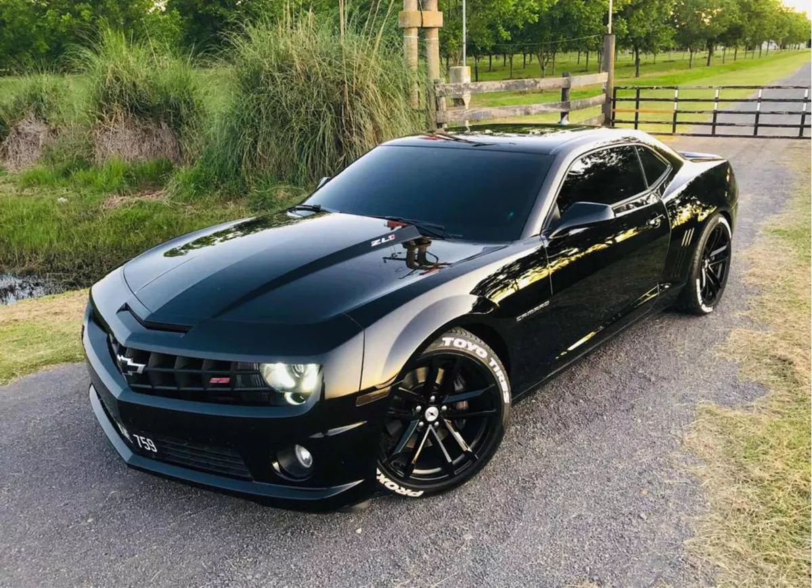
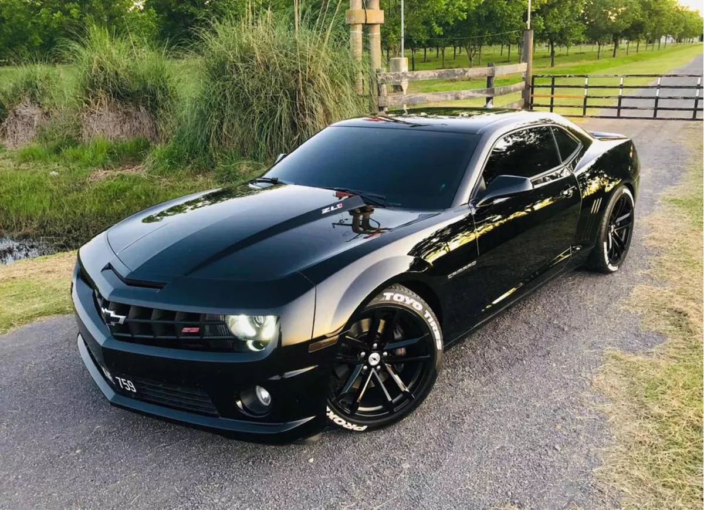

Deportivos Chevrolet
 

Camaro Características
Si quieres ahorrar gasolina, considera quedarte con el motor turbo de cuatro cilindros de serie del Camaro. Según la EPA, los acabados equipados con transmisión automática pueden rendir hasta 31 mpg. Las rendimiento también son muy buenas para un motor tan pequeño. Chevy lo afina para desarrollar unos agradables 275 caballos y 295 libras-pie de par. Es potencia suficiente para garantizar un rápido 0 a 100 km/h en 5,4 segundos. Recuerda que se recomienda gasolina premium.
Aunque el Chevrolet Camaro 2020 dispone de un potente motor V6, los verdaderos fans de los muscle cars querrán el motor V8. Tiene una potencia de 455 CV y un par de 455 lb-pie. El Camaro con motor V8 es, con diferencia, uno de los autos de producción más rápidos que . Esta bestia alcanza los 100 km/h en unos fulgurantes 4,1 segundos. Además de su ágil aceleración, también disfrutarás de su potente sonido de escape.
Megane RS Características
En un auto deportivo sin dudas lo más importante está debajo del capot. Así sucede en el Mégane RS, con un propulsor naftero 2.0 turbocomprimido de 16 válvulas, que desarrolla una potencia de 265 CV a 5.000 rpm y un torque máximo de 36,7 kgm a 3.000 rpm, suministrando más de 132 CV/l.
El modelo cuenta con una transmisión manual de seis velocidades que colabora para exprimir al máximo la potencia del motor. Medimos la aceleración con nuestro instrumental: para llegar a los 100 km/h partiendo de cero necesito 6,68 segundos y para el cuarto de milla 14,59 segundos. Pero también lo hicimos con el R-Link, allí las mediciones arrojaron 6,51 y 14,71 segundos respectivamente, una décima y pico de diferencia. Según las cifras oficiales, acelera de 0 a 100 km/h en 6 segundos y alcanza una velocidad máxima de 255 km/h. El pasaje de marchas las realizamos hasta las 6.300/6.400 rpm donde ya se encuentra la zona roja y donde nos avisa con un beep que estamos en esa area peligrosa.
En cuanto a consumos resulta muy contenido, lógicamente a velocidades respetables, es así que para recorrer 100 kilómetros a 100 km/h fueron necesarios 6,4 litros, mientras a 130 la cantidad de combustible fue de 8,1 l/100 km. En el ámbito urbano esos valores se elevan hasta los 11,5 l/100 km.